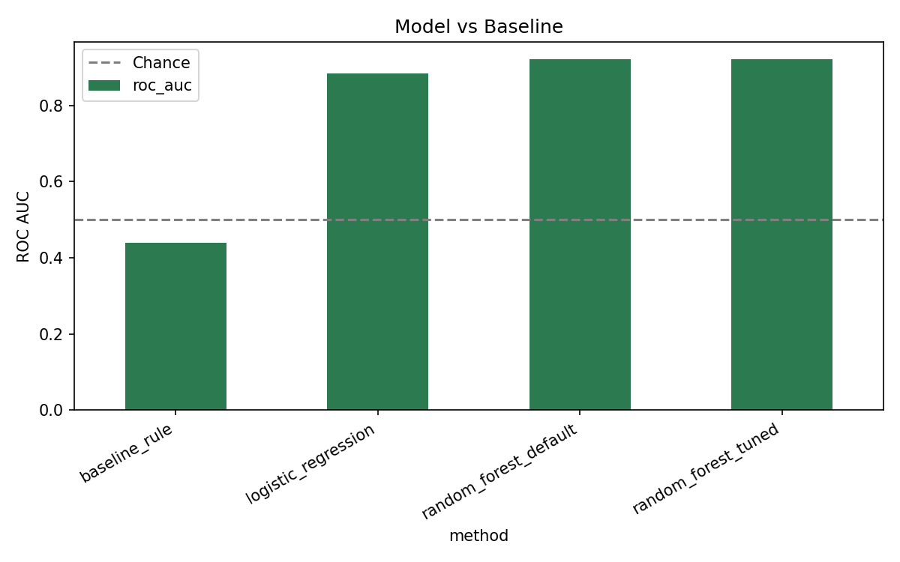
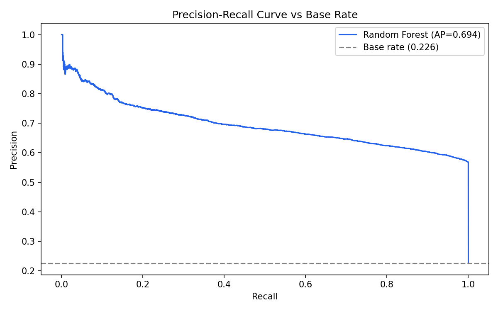
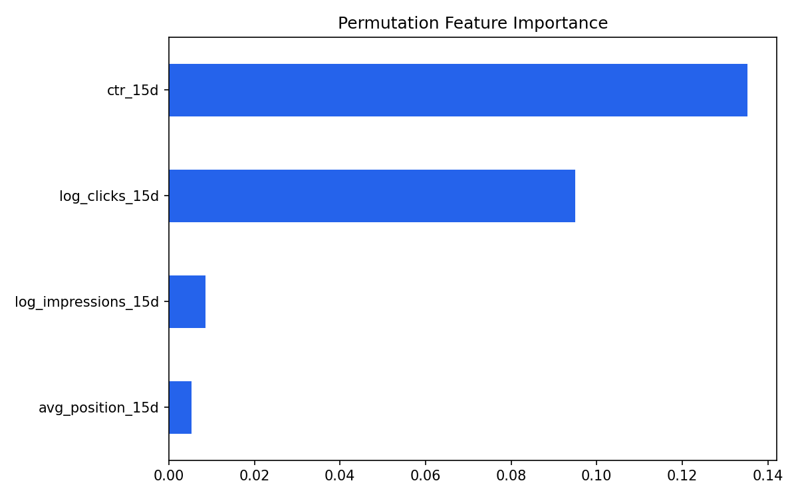
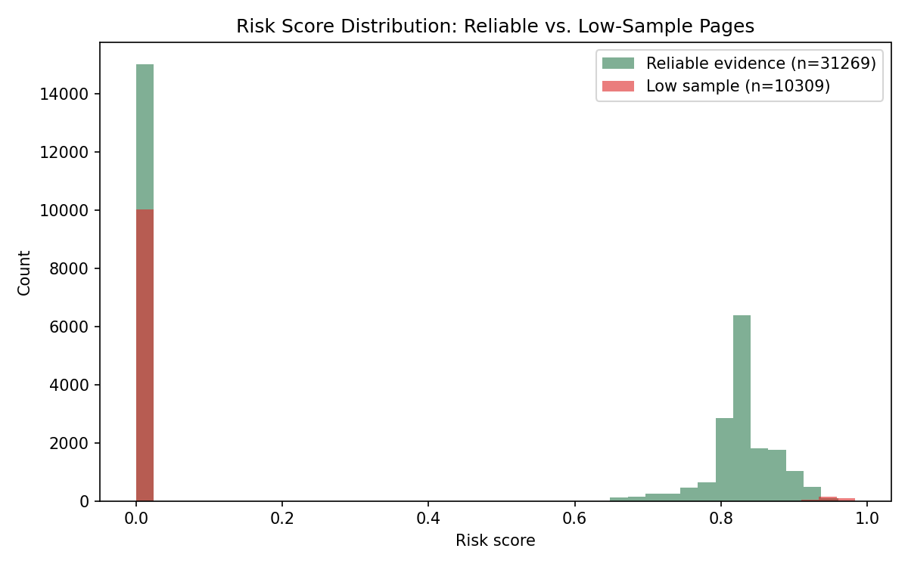
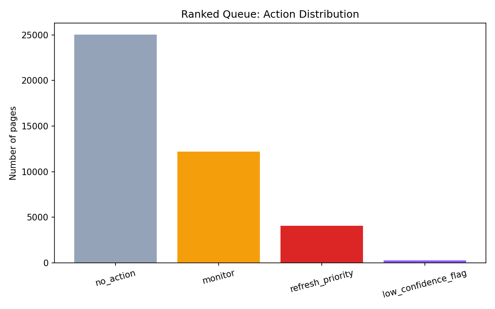

Content that ranks well today can quietly decay tomorrow, and most teams find out only after the traffic is already gone. Using six weeks of real FlyRank warehouse data from March 2026, spanning 151,981 pages across 44 pseudonymous clients, I asked whether a page's first fifteen days of performance could predict a meaningful click drop in the following fifteen days. I trained a Random Forest classifier on that early-window data and validated it on a client-grouped holdout split, meaning the fourteen test clients were never seen during training. The model reached a ROC AUC of 0.920, against 0.439 for a hand-written baseline rule, a result actually worse than chance. This output is meant to sit in front of a content editor as a ranked, reason-coded review queue, narrowing an unmanageable list of thousands of pages down to a short, trustworthy set worth a human's attention this week.
What decision does this actually support?
A content or SEO team responsible for thousands of pages across dozens of clients cannot realistically read every page every month to check whether it is still performing. In practice, teams rely on gut feel, a rough manual spot check, or a simple rule of thumb, and most declining pages simply never get looked at until traffic has already fallen off a cliff. This project answers a narrower, more useful question: given only what a page did in the first half of March, is it worth a human editor's time reviewing it before the month ends?
Unit of analysis. Every row in this study is a single page, aggregated across its daily performance for a fifteen day window. One row means one page's early-month behavior, nothing more granular and nothing more coarse.
What the model outputs. For every page, the system produces a decline risk score between zero and one, a short reason code explaining which signal drove that score, and one of four plain-language action labels: refresh priority, monitor, low confidence flag, or no action.
Who acts on this, and how. A content editor or SEO strategist works down the ranked queue from the top and decides, page by page, whether to refresh the content, keep an eye on it next cycle, or leave it alone. The model narrows an impossibly large list down to a manageable one. It never makes the final call itself.
What a wrong call actually costs. Missing a page that is genuinely declining means lost visibility keeps compounding quietly until it becomes expensive to reverse. Flagging a page that was never actually at risk wastes a reviewer's limited time on something that did not need it. There is a third, subtler cost that only became obvious once I inspected the model's own output closely: flagging a page on evidence that is statistically meaningless, such as a single click inflating a CTR to one hundred percent, does not just waste one review slot. It quietly teaches the reviewer to stop trusting the queue altogether, which is far more damaging than any individual missed flag.
Why this genuinely needed a model rather than a simple rule. The first attempt at solving this was a hand-written rule combining ranking position with click-through rate, the kind of logic a strategist might write down on a whiteboard. Scored fairly on held-out data, that rule reached a ROC AUC of only 0.439, meaning it was actually worse than randomly guessing which pages would decline. An earlier signal audit in this same project had already surfaced part of the reason why: decline risk does not rise steadily as ranking position gets worse, as most people would assume. Instead it peaks in the middle of the ranking pack and is actually lowest at both extremes, the very top positions and the deepest, barely visible ones. A rule built on the naive assumption breaks immediately. A model that can learn interactions between several weaker signals does much better.
What was used, what was excluded, and why
Source and scope. This paper uses the FlyRank ML Internship warehouse, specifically the fact_content_daily_performance table, hosted on Hugging Face and queried directly with DuckDB over the hf:// protocol with no local download. It draws from the month=2026-03 partition, filtered to rows where gsc_data_available is true and impressions are greater than zero, leaving 151,981 pages across 44 pseudonymous clients.
Columns deliberately excluded, and why. The future click count used to build the decline label, along with any field derived from it, is never allowed into the feature set. This was not just a policy decision. I tested it directly: deliberately adding that future value back in as a feature pushed ROC AUC from 0.921 up to an almost suspicious 0.998, the exact signature of a model being handed the answer instead of learning a real pattern. That experiment is committed in this project's earlier leakage-check notebook, and it is why that field stays permanently excluded here.
Pseudonymous IDs, grouping only, never features. Both content_hash_id and client_hash_id are used exclusively to join tables and to group the train and test split by client. Neither ID is ever passed into the model as a predictive feature, and neither could identify a real client, domain, or page even if it were.
Confirmation on client-identifying data. No client names, domains, page URLs, or private search queries appear anywhere in this repository, in any notebook, or in this deployed paper. Every identifier referenced anywhere in this project is a pseudonymous hash generated by FlyRank.
The transparent rule built before any model
The rule. Before touching any model, I built a rule a strategist could apply by hand with no tooling: flag a page if it holds a top three or page one position, and its click-through rate underperforms the average CTR for its position band by more than thirty percent. The expected CTR per position band was calibrated using training data only, then applied unchanged to the untouched test set, so the baseline is not accidentally cheating by peeking at test data either.
Why this is a fair comparison. It is simple, fully auditable by a non-technical reviewer, and represents exactly the kind of manual triage a content team could already run today with no model at all. Scoring the model against anything weaker would not have told me much.
The baseline's numbers, on the same data and metric as the model. Scored on the identical held-out test rows used for every model in this paper, the baseline rule reached a ROC AUC of 0.439, a precision of 0.185, a recall of 0.431, and an F1 score of 0.259. A ROC AUC below 0.5 means this rule performs worse than randomly guessing, which is itself a genuinely useful finding: it confirms that ranking position and click-through rate, taken in this simple combined form, are not a reliable decline signal on their own.
What was built, and why it fits this problem
Method and why it fits. A Random Forest classifier with two hundred trees and a maximum depth of six was trained, alongside a Logistic Regression model as a simpler linear comparison. Random Forest was chosen because the baseline's failure suggested the real relationship was not a clean threshold on any single signal, but likely an interaction between several weaker ones, exactly what a tree-based ensemble is built to capture without needing those interactions hand-specified in advance.
Feature list. Four features, all computed strictly within the first fifteen days of March: log-scaled total impressions, log-scaled total clicks, average ranking position, and click-through rate. Logging the impression and click counts was necessary because both are heavily right-skewed, with a small number of very high-traffic pages otherwise dominating the raw distribution and distorting the model's view of a typical page.
What was left out on purpose. Raw impression and click counts were dropped in favor of their log-scaled versions once the skew was confirmed. Content metadata such as word count and content type were left out of this particular feature set to keep the model lean and interpretable, a candidate for a future iteration rather than a leakage concern.
The target, in one sentence. A page is labeled as declining if its clicks in the second half of March fall below ninety percent of its first-half clicks, a proxy for real decline since the true, longer-term value of a page is not something that can be measured at the moment a prediction needs to be made.
The split, the metrics, and where the model gets it wrong
Split design and why. The data was split using a GroupShuffleSplit grouped by client, giving thirty training clients and fourteen fully held-out test clients with zero overlap between the two groups. A naive row-level split would let the same client's pages sit on both sides of the split, and the model could then partly learn that particular client's quirks rather than a pattern that would actually generalize to a client it has never seen before.
| Method | ROC AUC | Precision | Recall | F1 |
|---|---|---|---|---|
| Baseline rule | 0.439 | 0.185 | 0.431 | 0.259 |
| Logistic Regression | 0.884 | 0.555 | 0.850 | 0.671 |
| Random Forest | 0.920 | 0.568 | 0.9999 | 0.725 |
Base rate for comparison: 18.7 percent of pages in the test set are labeled as actually declining. Every metric above should be read against that number, not in isolation.


What the errors look like. Tuning the classification threshold using Youden's J statistic moved the cutoff from the default 0.5 up to 0.659, but recall barely changed, dropping only from 0.9999 to 0.9996. The model's predicted probabilities are heavily bunched up near 1.0 for pages it believes are declining, rather than the threshold itself being poorly chosen. Because of this, ROC AUC, which does not depend on picking any single threshold, is the more trustworthy number to compare across methods here. A more concrete error pattern showed up during manual review, covered in the next section: the model's ten single highest-confidence predictions all turned out to share the same flaw, a sample size of exactly one click.
What the model actually found, and one real surprise

Feature importances, in plain words. Click-through rate and click momentum, meaning the log-scaled click count, together drive the majority of the model's decisions at 55.4 percent of total permutation importance. Average position and raw impression volume matter much less than most people would guess going in, which itself runs against the naive assumption that ranking position should be the dominant signal for anything related to search performance.
The negative result worth keeping. An earlier signal audit in this project expected decline risk to rise steadily as ranking position worsened. It did not. Risk instead peaked in the middle of the ranking pack, while both the very top positions and the deepest, barely visible pages showed the lowest decline rates. A well-understood no is still a real finding, and this one directly shaped why the baseline rule in Section 3 failed the way it did.
The surprise that reshaped the recommendation. When I manually inspected the model's ten single highest-risk predictions, expecting to see its strongest evidence, I instead found every one of them belonged to a page with exactly one impression and one click. Mathematically that registers as a perfect one hundred percent click-through rate, but there is nothing meaningful behind a sample size of one. The model was not wrong about the arithmetic. It was simply never told that some evidence is too thin to trust, and that finding is what the recommendation in Section 7 is built around.
How a FlyRank editor would actually use this tomorrow
To fix the thin-evidence problem found in Section 6 properly, rather than just noting it as a caveat, I added a reliability guard directly into the scoring pipeline. Any page with fewer than thirty impressions in the fifteen day feature window is routed into its own dedicated review tier, low confidence flag, instead of being allowed to compete for a spot in the high-priority refresh queue.


What an editor does tomorrow. Open the ranked queue, start at the top of the refresh priority tier, and work down. For each flagged page, check whether elevated click activity reflects a genuinely sustainable pattern rather than a short-lived spike, and check whether the page is tied to a time-limited campaign where a later drop was always expected. Low confidence flag pages deserve a lighter, batch-style glance rather than full individual review, given how thin their underlying evidence is by design.
Confidence and limits, stated explicitly. This is decision-support, not a verdict. The 0.920 ROC AUC figure reflects performance on this specific thirty-client training sample and fourteen-client holdout, in a single month, and should not be read as a guarantee on unseen clients, future time periods, or different content types. What must never be automated on top of this system: publishing content changes automatically, deprioritizing or removing pages without a human looking first, and treating the risk score as a precise, calibrated probability of real-world traffic loss rather than what it actually is, a ranking signal meant purely for prioritization.
Everything here can be rerun from a clean clone
git clone https://github.com/Hussainhhgh/flyrank-ml-internship.git
cd flyrank-ml-internship
pip install -r requirements.txt
# Add your own HF_TOKEN in Colab Secrets before running
jupyter notebook work/notebooks/capstone.ipynbEvery model and every split in this project uses a fixed random seed of 42, so the exact numbers in this paper should reproduce on a fresh run. The cell that builds the client-grouped holdout split and the metrics file it produces are both committed under work/notebooks/capstone.ipynb and work/outputs/capstone_metrics.json in the linked repository, so this evaluation is checkable directly rather than taken on faith. Every notebook this capstone builds on, including the earlier weekly notebooks in this track, is committed under work/notebooks/.
Built on the FlyRank ML Internship dataset. Crediting the data source is standard research practice, and it tells anyone reading this exactly where the real data behind it came from.